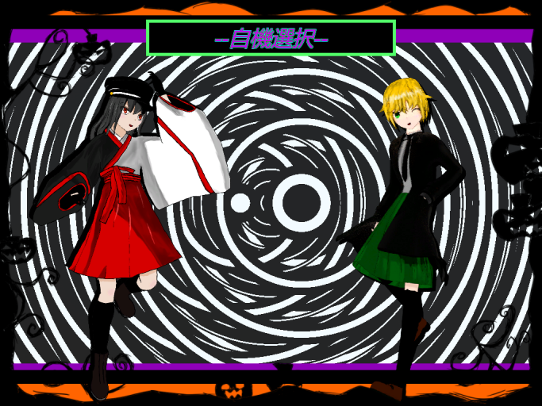
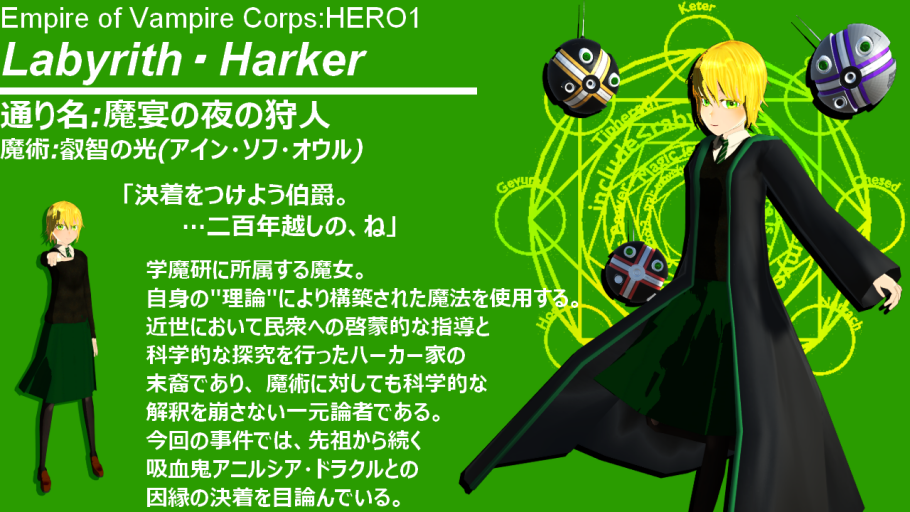
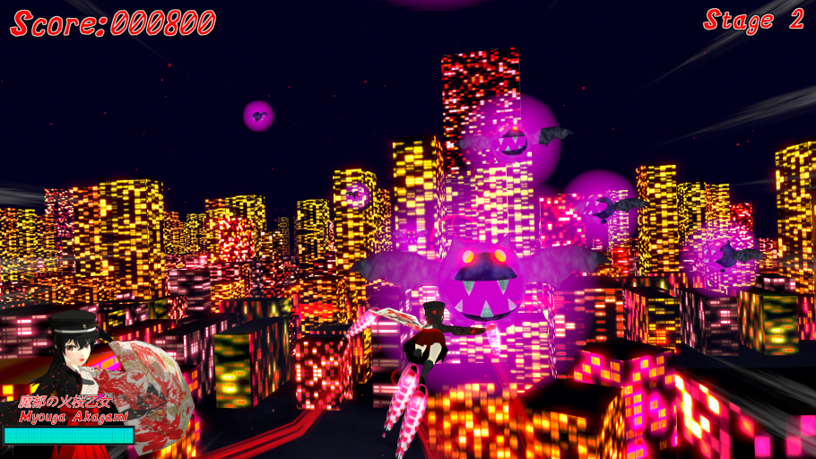
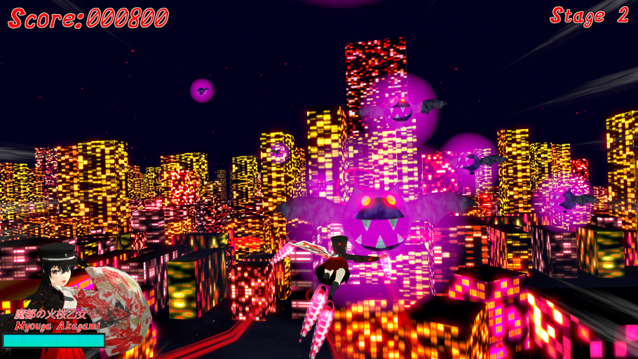
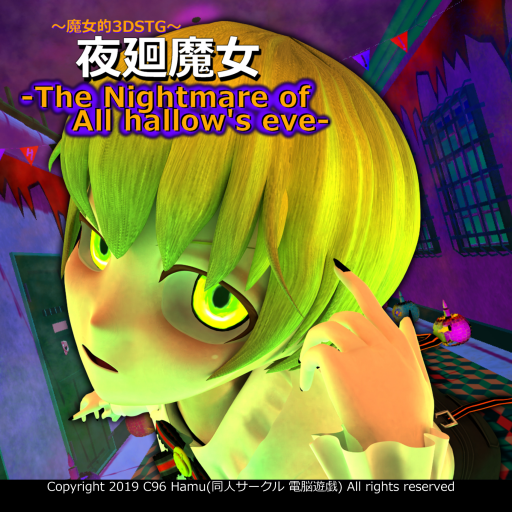
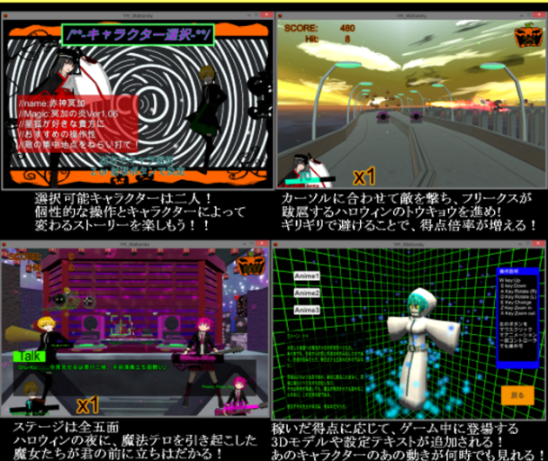
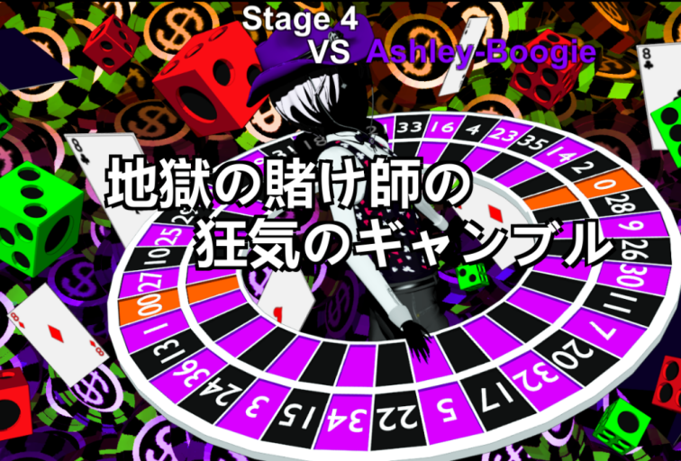
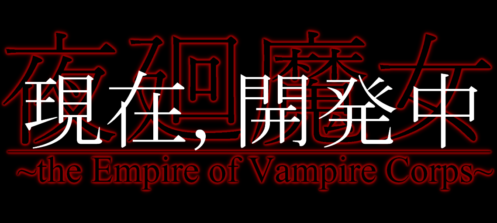

夜を廻る、魔女たちの物語...。
ゲーム紹介
夜廻魔女は, PC用3Dシューティングゲームです。主に二人の魔女を自機として操作し
シントウキョウシティに蔓延る魔女や化け物を倒すことを目的とします。
2019年。C96でシリーズ第一弾"夜廻魔女 The Nightmare of All hallow's eve"を発表しました。
現在シリーズ第二弾"夜廻魔女 the Empire of Vampire Corps"を開発中です。


 

シリーズ第一弾:夜廻魔女 The Nightmare of All hallow's eve
「終わらない、終わらないよ！私の夜は終わらない！」
ハロウィンを目前にして賑わう、魔都シントウウキョウシティでは
大量のフリークスによる暴動と都市機能の暴走という原因不明の現象が
立て続けに発生していた。
捜査を依頼されたヤマト大学の魔術研究チーム, "学魔研"は
不可解な現象の裏に何者かの意思が存在することを突き止める。
事態を重く見たシントウキョウ議会は, 一連の現象を史上初のフリークスによるテロと認定。
鎮圧のため, 秘密裏に"夜廻魔女"に出動を依頼する。
ハロウィンの魔都を舞台に, 狂人達の祭宴が始まろうとしていた。



シリーズ第二弾:夜廻魔女 the Empire of Vampire Corps
「化け物なんかじゃない！人として、愛して…欲しかったのよぉ！」
シントウキョウをシティを混乱に陥れたNightmare Halloween 事件から二ヶ月。
市民の間では事件の記憶も薄れ,世間は迫るクリスマスに色めき立っていた。
一方、魔術研究チーム学魔研では先の事件に関与していたエンパイアクリムゾン社(以下EC社)への対策会議が開かれていた。
吸血鬼アニルシア・ドラクル率いる金融企業EC社,そして、アニルシアのカリスマによって結束した
企業集団クリムゾンシスターズは、汚職と犯罪に彩られた魔都シントウキョウで急速に勢力を伸ばしつつあった。
魔都の守護者として,学魔研はEC社との対決を決意。夜廻魔女によるアニルシアの討伐作戦の開始を決定する。
聖夜の魔都を舞台に, 吸血鬼に魅了された化け物達との戦いが始まろうとしていた。
